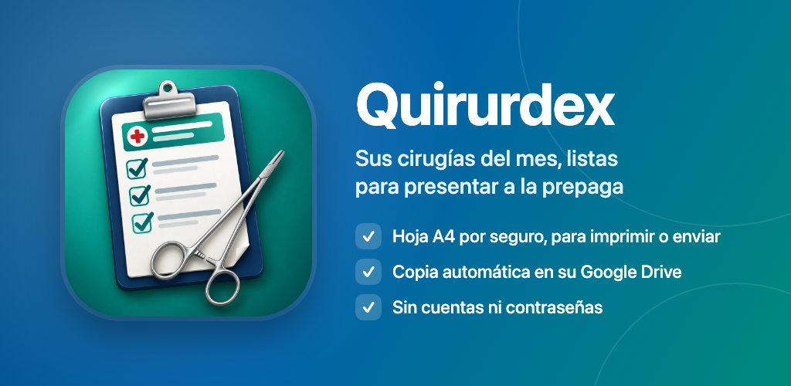
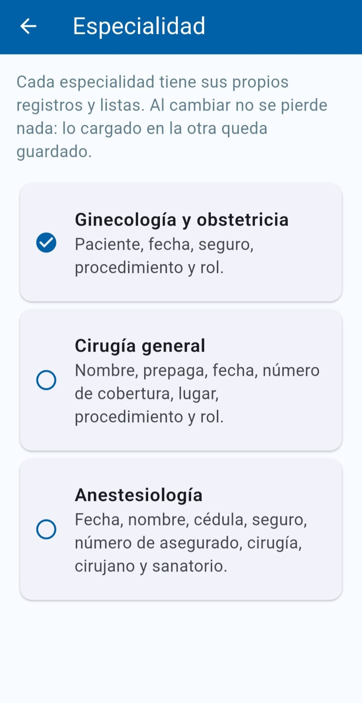
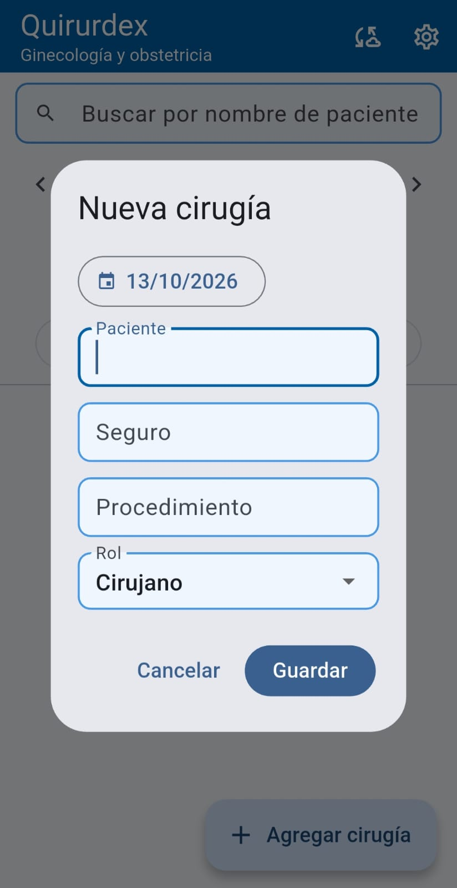
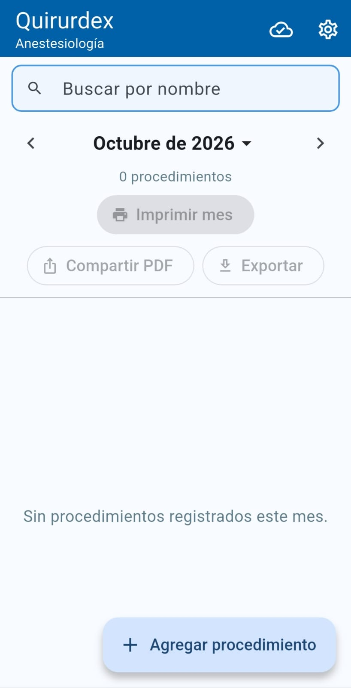
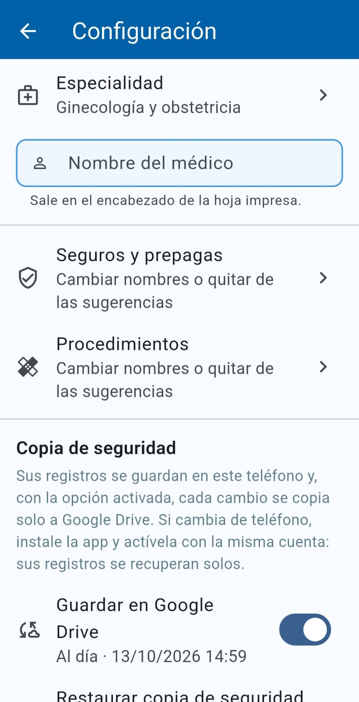

Sus cirugías del mes, listas para presentar a la prepaga
Quirurdex es la forma simple de llevar el registro de sus cirugías y procedimientos y entregar cada mes la hoja a los seguros y prepagas, sin planillas en papel ni hojas de cálculo.
Disponible en Google PlayPara teléfonos Android. Sin cuentas, sin publicidad y sin rastreo.

Pensada para su especialidad
Elija su especialidad al empezar y la app le pide exactamente los datos que necesita. Cada especialidad tiene sus propios registros y listas, y al cambiar no se pierde nada.
Ginecología y obstetricia
Paciente, fecha, seguro, procedimiento y rol.
Cirugía general
Nombre, prepaga, fecha, número de cobertura, lugar, procedimiento y rol.
Anestesiología
Fecha, nombre, cédula, seguro, número de asegurado, cirugía, cirujano y sanatorio.
Carga rápida
- La app aprende sola: seguros, cirujanos, lugares y sanatorios se suman a las sugerencias a medida que los usa.
- Autocompletado de procedimientos y cirugías.
- Rol en la cirugía (cirujano, primer o segundo ayudante, instrumentador u otro), con resumen del mes por rol.
- Búsqueda por nombre del paciente en todos los meses.
La hoja del mes, lista para presentar
- Hoja A4 ordenada por fecha, con una página por cada seguro o prepaga.
- Su nombre en el encabezado.
- Imprimir directamente desde el teléfono, compartir el PDF o exportarlo a la carpeta Descargas.
- Enviarla por correo a su computadora en un paso, con copia (CC) opcional, para imprimirla desde allí.
Así se ve




Sus datos, seguros
- Todo se guarda en su teléfono: sin cuentas, sin registro y sin contraseñas.
- Copia de seguridad automática en su propio Google Drive cada vez que guarda un registro. Si cambia o pierde el teléfono, instale Quirurdex, conecte la misma cuenta y sus registros vuelven solos.
- Si no hay señal, guarda en el teléfono y sube la copia apenas vuelve la conexión.
- Aviso si su Google Drive se está quedando sin espacio.
- La app solo accede al archivo de respaldo que ella misma crea, nunca al resto de su Drive.
- Sin publicidad y sin rastreo. Nosotros no recibimos ni vemos sus datos.
Lea la política de privacidad completa.
Preguntas frecuentes
¿Necesito crear una cuenta?
No. Quirurdex no tiene cuentas de usuario ni contraseñas. Los registros se guardan en su teléfono. La copia en Google Drive es opcional y usa su propia cuenta de Google.
¿Qué pasa si cambio de teléfono?
Instale Quirurdex, active la copia en Google Drive con la misma cuenta y sus registros se recuperan solos.
¿Puedo usarla sin conexión?
Sí. Sin señal guarda en el teléfono y sube la copia a su Drive apenas vuelve la conexión.
¿Puedo cambiar de especialidad más tarde?
Sí. Cada especialidad tiene sus propios registros y listas, y lo cargado en la otra queda guardado.